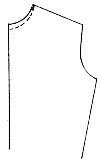

1936—Home Sewing Course
by Helen Hall
Series 3—Waist Finishing
BOUND BUTTONHOLES
Make samples
Buttonholes are easy if made according to professional methods. They offer an excellent trimming for many dresses and often give that center of interest so desired. As materials are handled differently, it is advisable to make two or three buttonholes in the material of the dress before the buttonholes are made on the garment itself. The secret of quick, perfect work is in the pressing. Basting back the buttonhole on most material is very tedious when the iron will do the work with speed and perfection. It is not necessary to baste any part of the buttonhole unless so desired.
Easiest method
The easiest way to make a bound buttonhole is to make it with one piece of material rather than to bind each side of a slash. If the slashed opening is bound, it makes heavy ridges in the binding and is made in this manner only when bias seam binding is used.
When made
Bound buttonholes are made before the dress is assembled, while worked buttonholes are made after the garment is finished. The buttonhole is made through but one thickness of the goods, and the facing is applied later. It is easier to stitch, turn and finish a buttonhole on a small section rather than on the finished garment.
Length Bound buttonholes are seldom made less than one inch long. If the buttons are small, tailored loops are then used as on neck closings and the backs of sleeves. These loops are applied to slashed opening while buttonholes must lap over the button.
Marking
The pattern usually marks the line for the buttonhole, but when remodeling a garment plan to make the buttonhole slashed with the straight thread of material. If on a lapel, follow the straight thread of the goods when cutting rather than making the buttonhole at right angles to the edge. If it must be made on the bias, then baste a straight piece of cotton material under the buttonhole before it is made.
Do not guess at spacing
Buttonholes should be carefully measured and marked before they are made. A crooked or poorly spaced buttonhole is very noticeable and often ruins the appearance of the garment. There is a rule for spacing buttons and buttonholes and this rule should be followed rather than to guess where they are to be placed.
Edge placement
The button will rest at the end of the buttonhole and not in the middle. The buttonhole will also be made on the garment before the facing is applied and a seam must be allowed at the edge. Press back the sewing line for marking until this rule becomes fully understood, otherwise the buttonhole may be cut too close to the edge of the dress.
After the edge seam is pressed back to mark the sewing line at the edge, place a button on the edge and mark back the width of the button, placing a pin at the mark. Then place the button at this pin and mark another button length for the length of the opening.
The shank of the button, or the threads that hold it in place, will take up an eighth-inch on all but large buttons. Add this eighth-inch at the front of the buttonhole toward the edge seam. This will make the opening one-eighth inch larger than the button. Very large buttons will require a quarter-inch for the shank.
Rule for spacing
When there will be a row of buttonholes, mark the first and last before spacing those in the center. After the first and last are marked, place the section on a table; with the ruler, draw a chalk line down both front and back edge of all the row. They will be evenly spaced unless unevenly grouped, and the general rule to follow will be to space them twice the width of the button apart. This rule will vary to a trifle wider width but not narrower. Mannish tailored garments such as shirt waists and coats have the buttons spaced wider. Long rows of buttons without buttonholes are placed quite close together.
Marking a row
After the first and last buttonholes are marked, cut a strip of paper the length between the two marked buttonholes. Mark on the paper twice the width of the button to be used, and fold it up accordingly. If it does not come out even, widen each space a trifle until the folds are even.
After the correct width is found, place the paper on the material, and place a pin to correspond with the creases. This will space the buttonholes quickly.
Marked on both sides
Measure both the back and the front line of buttonholes so that they will be straight. Chalk mark the line for each buttonhole. Then baste through each chalk mark, as the line will be used on the right side to place the binding material and the basting must go through to the back as a guide for stitching. The buttonhole will be stitched from the dress material and not over the binding.
If the material is loosely woven or is cut on the bias, it is advisable to baste a straight stay down the line to hold the stitching firm. This stay must be placed before the buttonholes are basted through from the right side, for the stitching will be done from this side. Baste and stitch through both dress and the stay.
Binding material
The strips for the binding are generally made of the same material as the garment and can be cut on the lengthwise, crosswise, or bias. The bias and crosswise may make a more attractive trimming, but the lengthwise will make the firm edge and will be easier to handle.
Each strip should be cut separately, as one continuous strip will make each section too small. Large separate sections must not overlap the next buttonhole.
Cut the scraps as wide as possible, at least one inch longer and two inches wider than the finished buttonhole. It does not pay to skimp on the size of the material used, the larger scrap will work much quicker. It will be trimmed off after it is finished.
Stitching
It is customary for dressmakers to mark all the buttonholes, then baste on all the scraps, then stitch them all, then slash them all, turn them all and finish. Do not finish one at a time.
After all the buttonholes are marked through to the reverse side, the binding material is ready to apply. If the material had a definite line on the lengthwise thread, all the scraps should be pressed down the center on this line.
This center line will mark the visible part of the binding and the line should not be crooked. Apply this scrap to the chalk mark and basted line on the right side of the garment, matching the fold of the crease to the basted line, placing it exactly in the center of the line with an equal amount extending at each end. Pin to place carefully with several pins. The pins will hold it for stitching.
 Stitch
Stitch
Turn to the wrong side with the scraps down on the machine. The basted lines will now be followed on each side. Start stitching to the side of the center of one of the lines and not at the point. Stitch one-eighth inch from the edge. (It is advisable for the amateur to practice on large buttonholes with a quarter-inch of stitching from the line until the rules are learned.)
Stitch to the end of the line, keeping on even width from the center. When the end is reached, lower the needle into the goods, lift the presser foot and turn the goods. Lower the presser foot and count the stitches across the end. The narrower the buttonhole the better it will look when made correctly. Four stitches are usually sufficient unless the larger practice buttonhole is being made.
After the end is stitched, turn the corner as before and stitch down the other side, keeping an even distance from the center. Turn the third corner and count the stitches of equal number on the other end. Overlap the stitching when the end is reached. If the material is loosely woven, stitch around the second time closely. Check to determine if the straight thread of material was followed on the right side of the material. Remove the bastings or pins, fold back the scrap to be sure that the thread is straight before slashing the opening. After the buttonhole is cut it cannot be changed, a remade buttonhole is always larger and longer.
Clip open
After it has been checked slash the center mark with sharp-pointed scissors along the basting. Start to cut at the center of the line and not at the end. The end must be clipped into a V-shaped section to be used later to hold the buttonhole together.
Clip from the center slash to each of the corners at the end of the line, but be sure not to clip the stitching. If it should accidentally be clipped, be sure to restitch it before turning.
Pull through
The binding is now ready to pull through to the wrong side, drawing out the corners. Have the iron ready and press open the opening into a rectangle. Be sure to press the corners perfect.
Press to shape
Each edge of the binding will now be pressed to shape. This will eliminate the basting and will make the line more perfect. The seam remains on the outside of the binding.
Bring one side of the binding up to fill exactly half of the space; fold back and press. Lift the other side to fill the remaining space and press back. If the pressing has been made even, the lines will be perfect and there will be two tiny inverted box pleats at the end of each line. Moisture should be used when possible.
Stitch the end
Lift the box pleat and stitch it to the point with the binding side down on the machine. This completes the buttonhole unless a facing is used. The edges can be caught to the seam if so desired. The edges are then trimmed off. On wash material they are turned back in a finish. The buttonhole is not stitched around the edges from the right side.
Facing finish
The buttonhole is made free from the facing which is later finished to the buttonhole.
Press the finished buttonhole flat and trim off the extra width of binding. After the facing is stitched on and the edge seam is pressed open, it is basted to the dress at the edge and around the buttonhole.
Clipped from the right side
After the facing is basted over the opening, it is clipped through from the right side.
It is then turned to the wrong side and clipped to the end of the buttonhole. Push under the raw edges with the needle and catch to the buttonhole as far back as the binding at the center. Graduate to a point at the end.
Lapel If the buttonhole is on a lapel, and will be visible from both the right and the wrong side, the facings must be finished with square corners, clipping the ends to two points as in the binding. Push under and slip stitch to the buttonhole on the exact sewing line, using small stitches, then press.
Commercial seam binding
When using bias binding for buttonholes, the line for the buttonhole must be opened before it is bound and must be applied skillfully. It can be done beautifully with practice.
Clip open the buttonhole to within a quarter of an inch of the end. Clip to the points. Baste on the binding with it extending one-quarter-inch on the wrong side. The binding must cover one-half of the opening.
Make the other side and press flat. Turn and stitch the points at the end on the wrong side to the two extended ends of the binding.
Practice making several buttonholes.
Questions—Bound Buttonholes
- What is the secret of making a quick perfect buttonhole?
- When are they made?
- Are they made through facings?
- What length are they made?
- On what thread of material are they cut?
- If made on the bias thread, what should be done?
- What is the rule for placing?
- How far back from the edge should buttonholes be placed?
- What line is used from which to measure?
- How is a corner buttonhole measured?
- When making a row, what two are marked first?
- How far apart are they spaced?
- How is a row spaced after the first two are marked?
- How are they marked, on wrong or right side? Why?
- Are buttonholes stayed? When?
- On what side are they stitched?
- How is the mark placed through to the wrong side?
- How is most successful binding cut?
- How large should the pieces be cut?
- Should one long piece be used?
- What is the dressmaker's method of stitching them?
- How is the binding prepared? Why?
- On which side of the garment is it placed?
- How is it stitched where started and ended?
- How are perfect points made?
- How are the ends stitched perfectly matched?
- What is done to loosely woven material?
- How are they slashed?
- Where should the stitching start and end?
- How does the end look after it is slashed?
- If threads are clipped, what must be done?
- What is the next important step, usually omitted?
- How is each side then handled?
- What is done with the side seams of the buttonhole?
- How is the end treated?
- Where is the end stitching made?
- When is the buttonhole trimmed off ?
- How are wash buttonholes handled?
- How are the buttonholes in facings marked?
- From which side are they clipped through the facing?
- How are they finished?
- What shape is the facing buttonhole?
- How is a lapel buttonhole made?
Buttonholes Made with Commercial Binding
- How are they cut? When?
- What width are they cut?
- How is binding applied?
- Is the machine stitching visible?
- How are the ends finished?
TAILORED LOOPS
Uses for loops
Loops of material are often used for buttonholes, especially for coat closings and for small buttons on slashed openings such as the back of the neck or wrists of the sleeve. They are placed quite close together in groups and are made without cord when used on dresses. The seam allowance on the side of the stitched material will form the filling when the strip is turned.
Material
Loops are made from the same material as the garment. They are cut on a true bias with a salvage across one end if possible, the width depending upon the weight of the material. The thinner the material the smaller the loop will be unless a wide seam is allowed for a filler. The finished loop should be round like a cord and not flat, this will require a complete filling of the turned cord.
Seam allowance
The width of the seam allowance will also depend upon its use. It is advisable to make a sample to determine the desired width of the finished loop and also to determine the necessary width of the seam with which to fill it. If too much seam has been allowed or the seam has been stitched too narrow it will be very difficult if not impossible to turn. Thin material will require a wide seam allowance, but a narrow width stitched for the cord, while coating will require a narrow seam and a wider space stitched for the cord.
Stitching Cut a true bias strip. There can be no joining seams. Cut several strips if necessary but do not sew them together. If several loops are to be made it is advisable to cut one long strip of true bias if possible. (See rules for cutting true bias.) Gauge the width of the folded edge, watching the space between the needle and the folded edge.
Stitching the loop
Baste the bias strip double before it is stitched. Keeping the bias folded even will prevent the loops from twisting. After one becomes experienced it will not be necessary to baste the strip, but the amateur should baste at all times.
Prepare to stitch. If there is more than one presser foot for the machine use one that permits seeing close to the needle. Gauge the width of the stitching from the needle to the folded edge.
Stitch slowly and stretch the bias, pulling from both ends while stitching. If the material is not stretched when it is stitched the threads of the stitching will break when the strain is placed upon them when it is turned. The line of stitching must be straight along the fold edge as this width will control the width of the loop. If the fold is too wide, it can be restitched over the first stitching. The seam will appear much wider after stitching as the width reduces when stretched. Test the correct width with a sample turned and completed.
Turn the strip
When the folded bias has been stitched correctly, slide a bodkin into the end with the selvage and sew the eye of the bodkin to the point of the folded selvage. The selvage prevents the threads from pulling out when the bodkin is pulled through.
The bodkin will now be inside of the loop ready to pull the seam through it. The thread must be firm and tacked to the bodkin securely so that the thread will not break.
Pull through
Pull the bodkin through the stitched fold, gradually working off the material from the head of the bodkin. It may be difficult to start if the goods is bunched at the head of the bodkin. A good loop will pull hard, for it must be closely packed, but it should not be too tight. If the first cord does not pull through try again with a wider opening or a narrower seam. If it is too thin make a wider seam allowance and stitch narrower. A little practice will make perfect, and the results are quite thrilling.
Coat loops
Loops for coats should be reinforced with a cord or tape, or a narrow selvage might be pulled through the loop. After the bias material has been cut, stitched and turned the bodkin is slid into the turned loop and the cord or tape is sewed to the eye of the bodkin. The cord is then pulled through with the bodkin, sewing the cord to it. The loop can then be stitched into the coat seam; or, if there is no seam on the edge, the long ends can be twisted into a snail and can be slip stitched and tacked to the edge of the coat. The loop should protrude at the edge.
 Application
of loops
Application
of loops
Loops are applied to an unfinished seam. The ends of the loops must be caught in the stitching when the facing is applied. Therefore, it is necessary to baste a colored line for the ending of the loops as they will all be of equal length. The final stitching of the facing to the dress will follow the colored line.
The seam should be quite narrow, as loops are usually used on a slashed opening. Baste a line down the seam at the edge of the stitching for the facing. This will be about one quarter-inch seam. All the loops will be tacked to place just below this line so that the basting need not be removed. Loops are basted with the ends outward and the loops toward the garment.
Three methods
Loops can be applied in any one of three methods. Each loop can be clipped off and with the ends held together can be basted to the seam (see illustration). Or the loops can be applied in one continuous strip with the loops spread out and the sides of the joining loop touching (see illustration). Or each loop can be clipped off and sewed to place with ends touching the next loop. This loop is made quite open and close to the seam.
Continuous
After the binding is finished back, the tiny loops will protrude in waves. The buttons should be tested to determine the correct width of the finish. The bias facing is finished flat to the dress.
Thread loops
Buttonholes are often made with buttonhole twist, especially when just one button is used to close an opening. The loops are used both for a closing and for a trimming. They are made with a fine crochet hook or the dressmaker often makes them with her fingers. (See lesson on belt loops.) Catch the end of the thread to the wrong side of the dress. Pull through a loop with the hook and crochet a loop and catch to the goods. The thread should match the material perfectly.
Practice making and applying loops.
Questions—Tailored Loops
- When are tailored loops made?
- Of what material are they made?
- How is it cut and how wide?
- What thread of the goods is used?
- Is it necessary to use a cord for a filler?
- What forms the cord?
- What should be cut at the end of each strip?
- Can the strips be joined together?
- Should the strips be basted? Why?
- What prevents the loops from twisting?
- What is watched when gauging for the stitching?
- What is done to the bias when stitching? Why?
- If not stitched even on the fold, what is done?
- How is the bodkin inserted; from which end?
- What part is watched on the bodkin when pulling?
- How are coat loops made?
- How are they attached?
- What are the three methods of attaching dress loops?
- What is necessary to mark for applying?
- How are continuous loops applied?
- How are separate loops applied?
- How is the finish applied?
- When are the ends trimmed off?
- How is the facing finished down?
- How are thread loops made?
- When are they used?
BIAS BINDING
Binding versus facing
A binding is an edge finish that rolls over the edge without turning under the seam. It is visible on both the right and wrong side. It is used as a finish on necks and sleeves when there are no collars or cuffs to be attached. It is also used to finish sections of the garment such as collars, cuffs and hems.
Facings are edge finishes that are turned back at the edge and are only visible on one side of the garment.
False binding
A false binding is a small tuck taken on the wrong side of a straight edge and this tuck is used as the seam when the raw edge is folded over and finished down as a binding.
Corresponding finish
An edge is either bound faced complete, it is never partly bound and partly faced. If the neck line is partially covered with a collar, the collar must be faced back, which will necessitate facing the complete neck line. The neck and sleeve edge should also harmonize.
All binding should be made narrow, never wider than one-quarter-inch when finished. An eighth-inch is even more desirable. The narrower the binding, the smarter the edge finish. Wide bindings are amateurish and give a noticeable home-made effect.
How to cut
Bias should always be cut on a true bias. Any variation from this rule ruins the effect. A true bias is the diagonal across the straight threads of the goods, joining two lines made at right angles along the straight threads, with the lines being of even length. It could be represented by a diagonally folded handkerchief.
A "near bias" or a "long bias" is the diagonally cut material, but it is not a true bias and is often incorrectly used for the true bias. Better results will be secured if this long bias is cut into shorter strips of true bias and seamed together. The stretching properties are not the same on the near bias and it gives a poor effect.
Mark the bias
It is unnecessary to use long strips for bias binding, smaller strips can be used to advantage, saving the larger pieces for possible use later. Straighten the material on the table, and if of a sheer fabric, pin it to a paper, straightening along the straight threads of the goods. Use tailor's chalk for marking, and mark the lines in long dashes. A long line cannot be chalk marked on thin material without ruffling the goods.
Cutting 'round and 'round
Cut bias carefully if the right effect is desired later. If a large section of true bias is available, it can be seamed together along the straight edge, making a circle of the goods. Cut with the scissor-cutting guide that slides over the point of the scissors.
Finding a true bias
If an uneven piece of goods is to be used for bias, mark a right angle along the straight threads, one line on the lengthwise and one on the crosswise of the goods. Mark off on these lines an even amount of inches, the length depending upon the size of the goods. Now join these marks on the lines across the bias of the goods and a true bias will be found. Mark to the right or left of this line for the bias strips.
Double and single
Double binding is easier to apply than single. The double binding is cut one and a quarter inch wide, for the amateur. The more experienced sewer can cut it one inch wide. It is easier for the beginner to stitch a wider seam when sewing the binding to the dress and then trim off the seam before turning. Double binding can be used on material that is not heavy, such as thin silks or cottons. Single binding is cut three-quarters of an inch wide—a trifle wider for the beginner and is used on heavier material.
 Trim ends
Trim ends
When scraps are used to cut bias, the ends are not always on a straight thread of material, which is necessary for correct joining. If the material is striped, all the stripes should run in the same direction and if the stripe is on a diagonal the lines should cut the same.
To match crooked seam ends of bias, overlap the stripes so that they will be placed in one long line. Slide the scissors under the two overlapped ends and cut along the straight thread of the goods. The two ends will now be perfectly matched.
Joining bias
There is a trick in joining bias so that the edges will be straight after they are joined together. Place the strips together at right angles on the seam. Make a wide seam and match the pieces at the sewing line and not at the edge. It will be at the center of the small point made when the two pieces are placed at right angles to each other. When the strips are opened, the outer line will be straight if the pieces are of even width.
It is advisable to stitch a wide joining seam as the seam must be pressed open and trimmed back later. It is impossible to press open a narrow seam.
Stitch continuously
When there are several strips to be joined for the binding, stitch continuously, stitching two strips together. Just as they leave the presser foot, slide two more strips under the presser foot for stitching. Be sure that the right side of the strip is used. After the seam leaves the machine it can be clipped apart. All the seams can be stitched in this manner. The seams are then all pressed open.
Trim and press
If the joining seam is wide, trim it off to a one-eighth seam after pressing. Then if the binding is a double binding, press it double along the full length of the strip, stretching the bias as it is pressed. This folded edge will be caught to the seam when finished.
Machine stitch the neck
Sheer material should be stitched around the neck line and then tested to determine if it lies flat before the binding is applied. The tension should be rather loose so that the thread can easily be removed after the binding is stitched to place.
When binding the neck, start the binding so that there will not be a joining seam of the binding at the center front. It is advisable to start the binding at the left side of the neck below the shoulder seam. Plan the binding so that the joining seams will miss all seams of the dress. Stretch the binding slightly when basting to an inner curve such as the neck.
The ends of the binding must be joined when binding a neck. The seam must be on the straight thread of the binding and not cross-wise. Leave at least two inches loose when starting to apply the binding, and tack two inches before the end is reached.
Overlap the two ends, pin them together as they will be sewed and then trim off. Baste together and test to determine if the bias is the correct length to fill the space. Then stitch the joining seam and baste to the dress.
If the neck is to be made into a point such as a V-shaped neck line, the binding will be applied as a straight line. After it is finished, the definite point will be made by holding the point together on the wrong side and tacking it by hand.
No puckers
Do not depend upon removing puckers in binding by pressing. If it puckers when basted it is twisted and will continue to pucker when finished. It must be ripped off and rebasted.
Puckered double binding is often the result of not using true bias or of using poor basting. The binding should be basted for the first stitching. It is turned and finished down with a slip stitch by hand without basting.
Attached
When machine stitching double binding to the dress, watch the space between the needle and the fold of the binding rather than the space between the needle and the raw edge. This is a universal mistake. It is more important to make the binding of uniform width than it is to make the seam even. The seam can be trimmed off later.
Finish a binding
It is not necessary to baste down the second turning of a double binding if it is to be hand finished. Trim off any loose threads and even the seam. Slip stitch the binding to place, sliding the needle into the fold of the binding and then catching a stitch of the machine sewing. This method will make the finish invisible.
Single binding
Single binding is used when the material is too heavy for the double binding. After it is stitched to the edge, the seam is trimmed off on an even line as the hand finishing progresses, pushing under the raw edge with the needle as the edge is caught to the seam.
Machine-stitched finish
Double binding can be finished by machine if so desired, as in factory made dresses. This binding must be cut wider than the hand finished as it will extend beyond the seam.
There are two methods of finishing. One is to press open the seam after attaching the binding; the other is to push the seam into the binding. The folded edge of the binding is then rolled over the edge and basted.
If the seam is pressed open, the machine stitching is made in the seam itself. If the seam is pushed into the binding, the stitching is made below the seam and on the dress and not the binding. Baste from the right side to watch the finished width of the binding.
When stitching on binding for the final finish with the seam pushed into the binding, it is sometimes easier to hold the bulk of the sewing under the arm of the machine or to right of the needle and thus stitch close to the binding. The stitching must be very close to avoid any semblance of a home-made effect. Some machines have an attachment or extra foot that makes it possible to stitch close to a ridge. This foot is excellent to use for this purpose.
Commercial Seam Binding
Cotton bias
Commercial bias binding can be purchased in all shades of cotton and in some shades of taffeta. The cotton binding is made in heavy and thin materials, some makes having the matching thread enclosed with the package. This is an advantage; all cotton binding is machine stitched on the binding on the right side, while bias binding made of self-material is not stitched on the binding but on the dress or is finished down by hand.
Binder
Cotton bias is sold ready to apply with the edges pressed under, and some is made that is folded double. The double fold can be applied with one stitching after some practice, especially with the sewing machine binder.
Modern sewing machines have an attachment for bias that applies it with one stitching. To use the binder, it is necessary to trim off the edge of the bias to a sharp point and then push the point into the binder with a stiletto or long darning needle. After it is properly placed it is easy to apply.
If the binder is not used, it is advisable to apply the binding with one or two bastings or with the first edge basted before it is turned and stitched.
The beginner should baste all bias before stitching. It requires experience to stitch without basting. After basting place the seam on the table to be sure that it lies flat. If it does not lie flat, rip and rebaste.
Curves
When sewing bias to inner curves it is necessary to stretch the bias slightly as it is being applied; when stitching to an outer curve, the binding is not stretched but may have to be held a trifle full.
Points
Inner points that are to be edged with commercial bias should be clipped to the depth of the seam before the binding is applied. The point is then stretched out into a straight line as the binding is basted on. After the binding is finished, the point is caught on the wrong side as in a V-neck dress.
Outer points that are to be finished with bias binding will have the binding stitched to the end of the point on one side. The binding will then be puckered under into a small dart to form a miter. The corner is then turned and the binding is continued down the other side.
Ribbon binding
Ribbon seam binding is generally used for inside finish of heavy materials and velvets. It is used for the finish of hems, plackets, and cuffs. The thin ribbon is flat stitched to the goods without turning the seam under, with the stitching on the edge of the ribbon. The top edge of the ribbon is then caught to place and the edges are not turned under.
Taffeta binding
Bias silk or cotton binding can be purchased to finish coat seams. This is applied similarly to binding cut from material. It is used for finishing the edges of unlined coats and curved edges. Coat seams are bound with the binding. It is opened on one edge, basted to the right side of the material, stitched to place, turned close to the seam edge, and then the remaining edge of the binding on the under side is opened and basted flat to the seam. The seam is turned to the right side and machine stitched in the fold of the goods, or directly below the binding and not on it.
Satin or sateen can be cut into coat binding and can be applied in the same manner.
Piping
Piping is applied with no visible stitching as it is placed between the edges of the goods and is invisible when stitched to place. The following rules must be followed to be able to stitch it a uniform width unless one edge of the seam is flat stitched.
Open the bias binding and baste double to one side of the seam only. Remove the bastings after stitching.
Place the matching edge to the seam and stitch together, following the first line of stitching as a guide. This makes the stitching invisible and the piping even.
Corded piping Corded piping requires a special machine attachment for making as the seam must be close to the edge of the cord.
Work out each step in samples.
Questions—Bias Binding
- What is the difference between binding and facing?
- What is a false binding?
- Should neck and sleeve finished harmonize?
- How wide should binding be finished?
- How should it be cut?
- What is a true bias?
- What is a near bias?—long bias?
- How do you find a true bias?
- How wide is a double bias binding cut?
- How wide is a single bias cut?
- Which is the easier to apply?
- How are uneven ends matched?
- Are the seams stitched wide or narrow when joining bias?
- How is the seam matched when joining?
- Why are they stitched wide?
- How are several strips joined?
- How is it pressed double?
- How should neck lines of sheer material be treated?
- Where is the neck binding started?
- Is the binding stretched on a neck ? Why?
- Should puckers be pressed out?
- Should it be basted for the first stitching?—for the finish?
- How is the needle gauged when stitching to dress?
- How is the raw edge of single binding turned under?
- How wide is machine-finished binding cut?
- How is it applied?
- Where is the machine finish stitched on the right side?
- Should beginners stitch on binding without basting?
- How are inner and outer points covered with bias binding?
- How are inner and outer curves covered with bias binding?
- How is ribbon binding applied?
- When is it used?
- How is bias used on unlined coat seams?
- What is piping?
- How can it be made straight?
FACINGS
Facings defined
Facings are sections of material that finish the edge without protruding; a binding extends beyond the edge.
A facing can be made either wide or narrow and can be made on the wrong side as a finish or on the right side as a trimming. All facings wider than one inch, finished, should be termed a shaped facing and should be made as such.
Shaped, or fitted facings
A shaped or fitted facing should be cut to fit the edge that is to be faced and should be cut on the exact thread of the material as the section that is being faced. This means that the lengthwise thread of the outer section must be matched perfectly with a lengthwise thread of the facing. Be careful not to confuse the crosswise thread with the lengthwise thread when cutting a facing, as the two will shrink differently and the garment will draw if the facing is not cut perfectly. It is advisable to piece the facing to be able to secure the correct thread of material.
Fitted facings for hems, revers, neck lines, etc., should be carefully cut to prevent them from drawing.
If the crosswise thread of the goods is to be used as a trimming, such as in striped or plaids, it is advisable to shrink the material before making.
Piecing facings
When facings are pieced, be sure to make all joining seams on the lengthwise thread of material—never on the bias. The seam should be matched perfectly, pressed open and then tested to be sure that it is the correct shape before it is applied. Narrow facings can be made on a true bias.
Fitted facings
Fitted facings such as collars, cuffs, revers, lined sections of peplums, drapes, flares and circular sections should be cut from the same pattern as the outer section, carefully watching the lengthwise thread.
Study the instructions given in these lessons for making collars and cuffs, as the facing is treated after it is cut and before it is applied.
Edge seams pressed open
The inner edge seam or joining seams of all facings should be pressed open before turning back. This will apply not only to straight edges but also all circular edges. If the seam is so joined that it will not lie flat when opened, then press back one side of the seam that has just been stitched, turn over and press back the other side.
Outer corners and curves
All outer corners must be clipped off before turning the seam and all right angles or less than right angles should be curved at the point rather than stitched to a true point so as to prevent the point from bulging. Outer curves should be clipped before turning.
Inner points and curves
All inner curves, such as neck lines, should be clipped every inch before turning. All inner points must also be clipped to within two threads of the sewing line to be able to turn a perfect point.
Trim facings
All facings that are to be invisible, such as reverse facings, collars, etc., should be cut exactly like the outer section and then trimmed off one-eighth inch on the outer edges, which will be the joining seams when the smaller edge is held to match the larger edge. It will make the seam roll under and not protrude when finished, and the seam will be invisible.
Edge finish
All outer edges of under facings should be machine stitched with one turning before the facing is applied.
Fit curves
If the facing is narrow and cut on a true bias, stretch the outer edge, as it is stitched in order to fit the curve of the neck or any similar curved section. If the facing is for the lower edge of a skirt and on the bias, hold in the outer edge when turning under so as to fit the inner curve of the hem. If the machine stitching is too tight it can be stretched, easing out the bobbin thread, if too loose, the bobbin thread can be drawn up. Press to shape before the final finish.
Baste to place
After the joining edge is pressed open and the outer edge is machine stitched, baste the facing back along the finished edge and press.
Basting board
Slide the basting board into the neck or front of the dress on the inside with the dress wrong side out. Flatten the facing against the dress and baste to place, basting a quarter of an inch back from the finished inside edge. Be sure that the facing lies flat and baste flat.
The facing is now ready to be attached to the garment. Remove the basting board. Pick up the garment along the basting and hold the facing to the back with an eighth of an inch protruding at the top. The dress is then slip stitched to the facing back from the edge, sliding the needle into a fold of the stitched facing and then catching two threads of the dress. The stitches can be made far apart but they must be loose. The basting line should not be drawn tight, it is very loose. Back stitch every three inches. This loose basting will prevent the stitches from drawing and the back stitch will hold the loose stitches in place. (See directions for tailored hem.)
Tacked Some dressmakers prefer to catch the facing to the garment with several tackings. This is optional with the worker.
Practice each problem in crepe paper.
Questions—Facings
- What is the difference between facing and binding?
- If it is wider than one inch, what is it termed?
- How is a facing cut?
- What is the important requirement? Why?
- If crosswise thread is used, what is to be done?
- When it is pieced what should be done?
- Why should it be tested?
- What is to be done before applying a facing?
- How is facing for collars and revers cut?
- What is to be done to the edge?
- What is to be done to outer curves and corners?
- What is to be done to inner curves and corners?
- How are curves stitched on facings?
- What is to be done to facings of collars and cuffs?
- How are the edges joined?
- How are edges of curves pressed open?
- How can narrow facings be cut?
- How is a true bias shaped to fit the outer edge?
- How is facing basted back to dress?
- How is the facing attached to the garment?
BUTTONS AND FASTENINGS
Men's and women's garments close on opposite sides
Garments for men and for women close on opposite sides. Women's garments close to the left while men's close to the right.
This custom has continued throughout the ages and originated in the ancient days when garments were held closed with the hands. A woman held her babe in her left arm and wrapped her mantle around it, leaving her right hand free to lead another child. The man carried his weapon on his left hip and wrapped his mantle to the right so as to leave his right hand free to quickly reach it. Hence the women's garments have continued to lap to the left and the man's to the right. All little girls and little boys clothes are also buttoned according to this rule.
Back opening in dresses follow the same rule, the right side laps to the left. Buttonholes are on the right and buttons on the left of the opening.
Spacing
Much of the smartness of the garment depends upon the correct placement of the buttons and buttonholes. Crude spacing denotes amateurish efforts and produces a home-made effect. A row of tailored buttonholes and buttons is often the only trimming on the garment and they should be spaced carefully.
If there are to be both buttons and bound buttonholes, the buttonholes are made first and the marks for placement of the buttons will be made through the buttonhole when the sides are overlapped flat on a table. The pin can be placed firmly when buttonholes are removed. Make the mark for the button at the front end of the buttonhole.
Practically the same rule for spacing applies to buttons as to buttonholes except that the center of the button will be marked rather than the end as in the buttonhole. The center of the button will rest at the end of the buttonhole.
Measure from the edge
Place the button on the finished edge of the garment; the width of the button gives the mark for sewing. Place two buttons together resting on this mark, and the correct mark will be given for the space between the buttons. The larger the buttons, the wider the space. This space can be widened if desired but should not be narrowed.
Shank
The shank of the button connects the button with the cloth. The thicker the cloth of the buttonhole the longer the shank should be made. Some buttons are made with a metal shank while thread must make the shank on others. All buttons that are used to hold a buttonhole should be sewed to the garment with a thread shank as the tight stitching without the shank produces a drawing on the buttonhole. The button with a large shank requires that the buttonhole be placed closer to the edge.
To make a thread shank, place a bar across the top of the button under the first thread. Use a pin, a needle, a darning needle or a match, depending on the depth of the shank desired. The match is used for men's coats. This crossbar holds the thread away from the button when sewing and when it is removed, this space will be under the button.
Making the shank
Take one stitch to hold the button down, slide the bar under the thread on top of the button. Take as many stitches as will be necessary to hold on the button; then remove the bar, pass the needle through the button on top of the goods on the right side of the garment. Wrap the thread around the threads under the button and then tack. When the thread is tacked, it will hold closer if each thread is knotted in this manner. After the loop is made, pass the needle through the loop and draw it up. Make three such knots before cutting off the thread. Do not break it, as the last two knots will loosen.
Coat buttons
Coat buttons are often re-enforced with a second button sewed on the under side. This will prevent the outer button from pulling out the material. The button can then be sewed through both the lining and the material, otherwise the button is sewed through but one thickness of the goods.
Men's buttons
Buttons sewed to a heavy coat without the small button on the wrong side must be sewed to place without the stitches going through the facing.
Use heavy thread for heavy material. Linen thread should be used for men's coats. Take a stitch on the right side of the coat where the button will be placed, then run the needle through the button and down to the under side of the button. Take a small stitch on the goods under the button to hold it in place. Slide a match under this thread and over the button.
Hold the coat over the finger with the button to one side and the under side of the button is visible. Take a stitch up over the button and down over the bar, then take a stitch across the goods under the button but do not catch the facing. Repeat this stitch until sufficient thread is over the button to hold it in place.
Remove the match, pass the needle through to the under side of the button. Wrap the thread around it and tack as directed.
Covered buttons
Buttons can be covered either by machine or by hand. Most department stores offer this service or will direct their customers to a reliable firm that offers this service. Material for the covering must accompany the order as these buttons are made of matching materials. Small scraps of material are sufficient as small circles are cut for the coverings.
Molds for these buttons are furnished by the firm that makes them; they offer various shapes and sizes. They are usually used on tailored dresses made of satins and woolens. Heavy plain crepe is also trimmed in tailored buttons. They are often used as a trimming, being placed close together on slashed openings on necks and sleeves or a collar and front closing or in a close row down the sleeve. They are often made very small, closing with tailored loops.
Hand-covered buttons
A few larger buttons can be covered by hand. Cut a circle of material over twice the width of the button. Run a gathering thread around it, making the gathered circle larger than the button. Place the button in the center with the rounded side next to the cloth and draw up the thread. The ends of the cloth should be sufficiently long to hold in the hand as a stem.
Sew back and forth across the under side of the button, gradually turning it until all the gathered portion is held firmly in place. Do not run the thread over the raw edges. This will be trimmed off later. When the stitching is firm, trim off the ends flush with the button and tack.
When to use snaps
Snap fasteners are used for invisible closings and are used on openings that have no strain. A waist may be closed at the side with snaps, but if there is no belt to relieve the strain there should be a hook and eye at the waist line.
Snaps are made in several sizes both in black and white. They are placed close to the finished edge usually with the socket section on top. This is not a definite rule.
Spaces for the snaps should be marked before sewing to place. The stem part is sewed on first, placing pins for the marks. Place the end snaps and then fill in the space evenly as closely as necessary.
The thread is sewed over the sides, two stitches in each opening. Sew with heavy thread. Bring the needle up from under the snap at each opening. Tack securely.
After all the stem sections are sewed to place, place the placket flat on the table and rub over the stems with tailor's chalk. Press down the stems hard against the matching seam and each matching section will be marked perfectly. Quickly place a pin on each small chalk mark before it disappears.
The hook is placed on the top part of the seam and is sewed back from the edge making it invisible. It is sewed to place around the ends of the hook and the top is also held to place with stitches. If several hooks are used, a small piece of ribbon can be slipped under them for a finish.
There are two types of eyes that can be used; one is the metal eye that comes with the hook, or a thread loop can be made to use as the eye. The straight metal eye will be the most invisible of the metal eyes. The thread loop is made like a bar tack (see lesson on belts), or can be buttonholed.
Weights
Covered weights are used on cowl neck lines. Otherwise they are seldom used in the modern garments; for if a garment fits correctly, it is not necessary to hold it in place with weights.
The weight for a cowl neck is covered with matching material. Sew up a long fold the size of the weight and four inches long. Turn and slide the weight into the fold. Tack it to place and then tack the end of the fold to the collar line of the dress. The weight will drop and hold the collar down. The folds of the cowl are tacked to the material of the covering.
Lingerie
The woman with sloping shoulders finds it difficult to hold the lingerie straps in place. She will find that a pattern for the built-up shoulder or the shaped shoulder will be helpful. The straps must also be attached closer to the center front and the center back of the garments for this type of figure.
Lingerie tabs
Lingerie tabs are also very helpful. Use ribbon seam binding or a folded selvage, two inches long. Sew the loose end to the dress shoulder seam and the fold end will have a snap sewed to it. The matching section of the snap will be sewed to the dress. The straps will slide under the tab.
Questions—Buttons and Fastenings
- Do women's garments close to the right or left?
- Do men's garments close to right or left?
- Does the same rule apply to children's clothes?
- Do back openings follow the same rule?
- Is there a rule for spacing buttons?
- Which is first, the bound buttonhole, or the placing of the buttons?
- How is the button placed with bound buttonholes?
- Does the same rule for spacing apply to buttons as to buttonholes?
- What is the rule?
- Should the space be widened or narrowed?
- What is the shank of the button?
- Can a thread shank be made?
- On what depends the depth of the shank?
- What kind of button should be sewed to a garment with a shank? and Why?
- How is a thread shank made?
- What is used to gauge the depth of the shank?
- How is the bar used?
- What holds the button firmly in place?
- How is this made?
- How is a coat button often reinforced?
- How is a button sewed when there is a facing?
- Is the stitch taken through to the facing side?
- How is the button held?
- How are buttons covered?
- When are covered buttons used?
- How are buttons covered by hand?
- How large is the scrap cut?
- How is it gathered, drawn up to fit, and tacked?
- When are snaps used?
- What is used at the waist line on a placket?
- Should the spaces for snaps be marked?
- Which section of snaps are placed first?
- Which section is sewed on first?
- How is the mark made for the socket?
- Where is the hook placed?
- How are several hooks covered?
- What type of eyes can be used?
- How are thread eyes made?
- What are covered weights used for?
- How are they covered?
- How are shoulder straps held on the garment for sloping shoulders?
- What are lingerie tabs?
- How are they made?
COLLARS AND NECK LINES
Too low
Neck lines are made in various designs, but they should often be modified to suit the type of individual who is to wear the garment. If the neck is low, it may be too low for some individuals, and if it is high it may be more becoming if it were made lower. The broad, round face should wear the V-shaped necks and should modify round necks so as to make the face appear longer rather than broader. The same is true of the long, thin face: the V-shaped necks should be raised to the rounder type and possibly have a collar added.
Cut cautiously
Be cautious when cutting a neck line. Cut the neck higher than indicated in the pattern and mark the pattern line, but do not cut it low. A neck line cut half an inch too low may ruin the appearance of the dress on the individual. It is always possible to cut out the neck later. Material can be cut off but it cannot be put on so easily.
Neck lines and sleeves should harmonize. If the neck line has a collar, the edge of the sleeve should have a semblance of a cuff or cuff trimming. If the neck is bound as a finish, the edge of the sleeve is bound also. If the neck is faced, then the sleeve is also faced.
Binding a trimming
Binding is often used as a trimming when there is no definite neck finish in collars or drapes. When there is a collar or a partial collar in the front, back or at the sides, or when there is a draped or scarf effect, the neck and sleeves should be faced. The same finish will extend around the neck whether it is bound or faced. It will not be faced over the collar and bound over the open section.
Wide facings
When wide facings are flat stitched to the right side of the neck for a trimming, a similar trimming is often made on the sleeve. When a revers is faced, or a front facing applied, the facing extends under the fold for two inches, and is attached to the shoulder seam. This prevents the raw edge from being visible. The facing of a lapel will be on the right side of the garment when the fold is turned back. Remember this when cutting.
Narrow facings
Necks and sleeves are often narrow, finished with facings. The wider facings are cut on the same thread of material as the outer section, while a narrow facing can be cut on a true bias. (See facings.)
Collars
A collar usually rests at the bone in the back of the neck unless otherwise designed. This is especially true of the one-piece collar that opens in front. A back opening often drops lower. Individuals with short necks should avoid collar effects, for they shorten the neck. The woman with the long neck can even increase the width of the collar and make it stand higher.
Modification
A collar that rolls up at the back of the neck apparently decreases the length of the neck. This can easily be accomplished by a slight modification of the collar pattern. The collar will stand higher if the outer edge is decreased. Take a quarter-inch dart at the outer edge at the shoulder line of the collar pattern and pin this into the pattern. Do not reduce the neck size. The collar can be made to lie flat on short necks by slashing the pattern and spreading it a half inch at the shoulder line. It is always advisable to make a trial collar in muslin before cutting the material. Baste it to the dress and determine if it has the desired effect. The muslin can be changed and the material will cut from the altered muslin.
Match the thread
All collar facings should be cut on the same thread of material as the outer collar. The facing can be pieced if the material is not too thin. All joining piecing seams must be along the straight thread of material and all must be pressed open and the collar laid flat so that the two collars can be perfectly matched before being joined. Open the collars for testing. Do not measure from a half collar; it will not be a true test.
Loops
If the collar will have any tailored loops or any bound buttonholes at the edge they must be made before the facing is attached. In some tailored collars the bound buttonhole will be made on the facing, as this will be the outer section when worn. Test the placement before making.
Thin material
Collars of thin material are faced with the collar facing cut exactly like the outer collar. The seam will then be exactly on the edge.
Smaller facing
Heavy material should have the under collar trimmed back at the outer edge before stitching. This will make the collar edge roll under and be invisible. Cut the two collars exactly alike, then trim off one-eighth inch on all outer seams. The neck seams remain the same. When the two collars are basted together the longer edge is held to the shorter edge and pinned together before basting, matching the centers. The edges will be held together when basting and the longer edge will be held in to the shorter edge, easing in the slight fullness.
Stitch the seam at the edge and, if possible, press it open. Clip all inner corners and notch outer curves and corners. At least one side of the seam can be pressed back before turning under. After the collar is turned, baste along the edge and the seam will roll under the collar and be invisible from the front. Baste the collar edge and press flat.
Applied
The collar should be finished complete before it is applied to the dress. The two edges at the neck are basted together and will be both basted to the dress. One side of the collar is not used for the finish. This makes a bulging seam under the collar and does not permit the collar to set smoothly. Even a standing collar should be finished in this manner.
The collar is then basted to the dress and a separate facing is basted over it. This facing can be a narrow true bias cut one and a half inches wide or can be a fitted facing. This will make four thicknesses stitched at the neck line, the two collar edges, the dress, and the facing. Stitch to place, baste flat and finish. (See facings.)
Slashed openings at necks
A slashed opening at the neck requires special care when making. Any tailored loops must be made and applied before the facing is attached. The edge seam is stitched narrow, gradually narrowing the seam as it reaches the point until the seam at the point catches but two or three threads of the goods. The point will then be buttonholed with hand stitching to hold the seam firm.
Tailored collars
Tailored collars and convertible collars are made differently from the regular set-on collar as just described. There will be a joining seam along the edge that must be smooth and flat. Many of the tailored dresses are made in this manner, and all notched collars and all coat collars are made this way. If tailored methods are not used on tailored garments a homemade effect will be produced.
The collar described will be a simple coat dress with a straight collar stitched across the neck and turned back to form a revers. The coat collar will be a shaped section but will be applied in the same manner. The straight strip across the back of the neck is often used in dresses.
Sample lesson
It is advisable to first make a sample collar and facing. Cut a sample of the front and back section to below the armhole line. Also cut a facing for both the front and back section. Cut two sample collars. The matching sections must be cut on the same thread of the material. Both collars should be cut on the same thread of the goods and must be perfectly matched. Join the shoulder seams of both the outer section and also of the facing. Baste one of the collars to each section.
Joined
Be sure to press open the seam at the neck line that joined the collar to the dress and facing. This pressing is often omitted. One side of this pressed open seam will be used later and it must be perfectly flat.
The facing and collar is now ready to be attached to the other collar and to the dress. Slide the facing section over the dress section and baste the two collars together carefully, matching the center backs and the seam lines at the front. Baste all around the collar and down both sides of the front.
If the collar is a notched collar as in a coat, the inner corners of the seams should be clipped off so that the seam can be pressed open and the points will not interfere with a true basting to the point. If they do not match, the basting should be ripped and the seams must be made to match. These seams will be basted together on the under side later.
Press open the seam
This outer seam on the edge should be pressed open. If it cannot be fumed and pressed, press back one edge of the seam at a time. Then turn, baste at the edge and press again.
The next step is important and is usually omitted by the home sewer. This is accomplished after the collar is turned. Pin the collar and facing together on the right side along the front neck seam to the shoulder, placing the pins on the collar side and parallel with the seam. This is the seam that joins the collar to the garment.
Turn the under side of the seam outward by turning the facing back until the seam is visible. Sew the two raw seam edges together with hand sewing as close to the seam line as possible. This holds the two seams together and prevents them from slipping. Press flat.
The back
The back of the neck will then be finished. This inside basting will be continued all around the neck, hand sewing the two seams together to make a flat seam. The outer edge of the facing will then be finished. (See rules for facings.)
Pleat opening
Collars with a pleat opening in front are finished somewhat differently. Baste the two collars to place carefully, watching the center front mark on the pleat. The pleat will extend beyond the center front. This pleat will fold back and will form the facing of the pleat in front. The extended facing will remain open until the collar is basted to place.
After the collar is basted to the neck line, matching it to the center front mark, fold back the facing on the mark of the pattern for the fold and baste it across the double edge and partly extending over the collar edge. The hem will also be turned back on the facing, turning it outward, as this facing will later be turned under. This will finish the edge of the facing visible at the neck. It should have no bias binding across it. The bias binding for the collar finish will now be basted over the front facing and around the neck line over the collar edge. Start the bias at the center front and not at the edge. It should cover the edge of the facing. (See illustration.)
After the bias is also basted to place, machine stitch the neck line, starting at the front, stitching over the front facing, the bias and the collar edge. The neck line will then be clipped, and the facing and bias turned to the wrong side and basted at the neck line. The edge of the bias will then be turned under and either machine stitched all around the turned edge free from the neck before it is felled to place, or it can be slip stitched without the stitching. This bias must be narrow when finished, otherwise a fitted facing must be used.
Experiment with paper collars.
Questions—Collars and Neck Lines
- Why should neck lines often be modified?
- Should the broad face wear a V-neck ?
- Should the short neck wear a high collar?
- Does a half-inch make a difference?
- How should neck lines and sleeves harmonize in finish?
- When is the neck bound?
- When is it faced?
- Does the front revers facing extend back at the neck?
- Are facings made narrow? How are they cut?
- Where does the collar rest?
- How can collars be modified for individuals?
- What is done to make a collar roll higher in the back?
- What is done to make a collar lie flatter?
- How is a collar facing cut?
- Can the facing be pieced? When?
- How is the piecing matched?
- What should be done before joining the two collars?
- Is it advisable to measure from a folded collar?
- When are tailored loops applied?
- When are the bound buttonholes made?
- What is done to the facing of collars of heavy material?
- Should the edges be trimmed on thinner material?
- How much of the edge is trimmed off